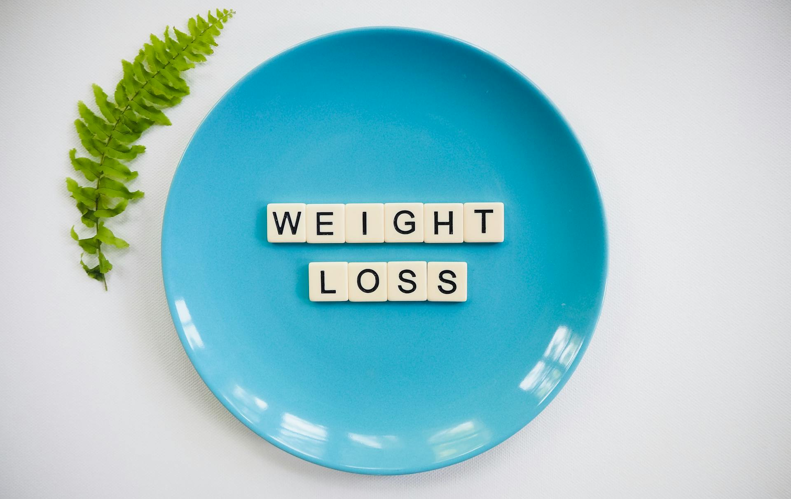

Информация о проекте
Этот калькулятор ИМТ был создан для того, чтобы помочь людям быстро и легко рассчитать индекс массы тела (ИМТ), который является важным индикатором здоровья.
Проект включает в себя простую форму, где пользователь вводит свой вес и рост, а затем получает точное значение ИМТ с соответствующей категорией (нормальный вес, избыточный вес и т. д.).
